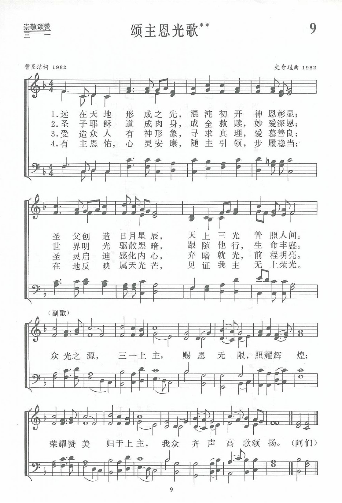
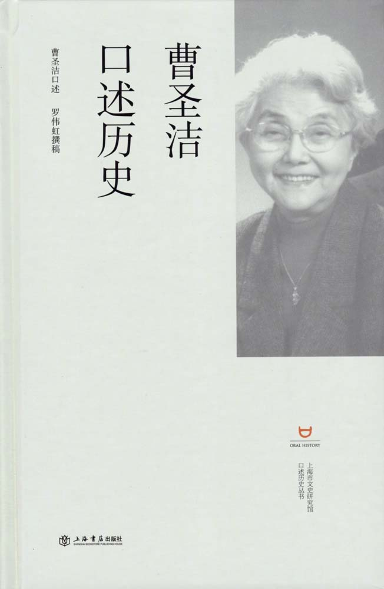

|
|
|
|
|
第009首《頌主恩光歌》 |
|
https://www.zanmeishige.com/tab/13640.html?songbook=1&index=9
 |
|
|
|
|

https://www.youtube.com/watch?v=9YpvdIrxaJI
第9首 颂主恩光歌** 曹圣洁 Long before the universe formed
经文：“各样美善的恩赐和各样全备的赏赐都是从上头来的，从众光之父那里降下来的，在他并没有改变，也没有转动的影儿”(雅1：17)。
这首诗的歌词和曲调的二位作者，都是《新编》编辑部的人员，都是金陵协和神学院的毕业生。
词作者曹圣洁牧师1931年生于上海。抚养她成人的外祖母和母亲都是热心信徒，并把她从小奉献给主，少年时期便在教会内担任司琴、主日学教员等事工。l949年她从上海进德女中高中毕业后，献身进入圣公会中央神学院学习，l953年毕业于南京金陵协和神学院。五十年代，她在上海圣彼得堂、怀恩堂等传道。1980年中国基督教协会成立后，她被推选为副总干事。1988年被按立为牧师，在上海怀恩堂任职。1992年被选为中国基督教协会第三届副会长。
曹圣洁白自幼学弹钢琴，曾经为好几个不同教派的教堂司琴，对各种圣诗比较熟悉。基督教协会成立后，她所负责的第一件工作便是编辑《新编》，供应全国信徒。事成后，她说：“回想过去，更明白是神奇妙的带领我、预备我，使我能有份于此圣工。”她不善于写诗。
这是她在担任圣诗编辑以后，为鼓励同工同道投身创作而写的第一首诗，以传统的格律歌颂三一上主是真光。
第一至三节分别述说圣父、圣子、圣灵与光的关系；
第四节论信徒为光作见证的责任；
副歌强调神是众光之源，行在光中的都属于神。
《新编》内除这一首以外，还有332、358两首歌词也是曹圣洁的作品。
曲调是上海史奇珪牧师特为这首诗所谱。史奇珪1929年生于苏州一个基督教家庭。父亲史襄哉教授曾任《普天颂赞》的编辑委员。由于家庭的薰陶，史奇珪从小爱好音乐。他在东吴大学附中读高中时决心献身为主，1949年进南京金陵神学院学习，在校时曾协助该院黄素贞教授推进圣乐工作。1953年神学毕业后一直在上海教会工作，1955年被按立为牧师。198O年后除参加《新编》编辑部工作以外，主要担任沐恩堂牧师、主任牧师、上海基督教教务委员会常委、副主席等职。1992年被选为中国基督教协会第三届常委。
史奇珪创作赞美诗较多。《新编》内除这首外，尚有第79、127、193、358、368五首也由他谱曲，1O3首由他作歌词，127首由他写词曲。此外他还常谱写适用于唱诗班的圣歌。在《圣歌选集》内发表的有《主爱拣选》、《啊，有一盏灯》等。
曹聖潔 1931- [編輯]

曹聖潔（1931年5月－），女，祖籍江蘇宜興，生於上海，中國牧師，中國基督教協會第一、二屆副總幹事、第三、四屆副會長，中國基督教協會第五屆會長兼總幹事，中國基督教三自愛國運動委員會第八屆、中國基督教協會第六屆諮詢委員會主任。
生平[編輯]
1931年5月，曹聖潔出生於中國上海的一個基督徒家庭。10歲起擔任教會司琴，養父去世後，她靠做鋼琴家教和獎學金讀完高中。1950年考入中華聖公會中央神學院（1952年併入金陵協和神學院）。1953年畢業後曹聖潔回到上海，任北京西路聖公會聖彼得堂傳道，主要從事青年工作、詩班工作。1958年，聖彼得堂被合併到懷恩堂，她繼續在懷恩堂任傳道，後來被按立為牧師。1962年，曹聖潔被調入中國基督教三自愛國運動委員會任秘書，在「三自」發起人吳耀宗身邊工作。1966年，文革爆發，曹聖潔與許多傳道人一樣，受到衝擊。
1980年代，懷恩堂復堂，曹聖潔回到三自愛國教會工作。1997年至2002年任上海市基督教教務委員會主席。1980年代初，鄭建業主教和羅竹風籌建上海社會科學院宗教研究所，聘請曹聖潔進入研究所工作，她到浙江等地進行調查研究。
在1992年第五次全國基督教代表會議上，曹聖潔當選為中國基督教協會副會長。2002年5月，在中國基督教第七次全國代表會議上，她當選為中國基督教協會會長。
參考文獻
https://zh.wikipedia.org/wiki/%E6%9B%B9%E5%9C%A3%E6%B4%81